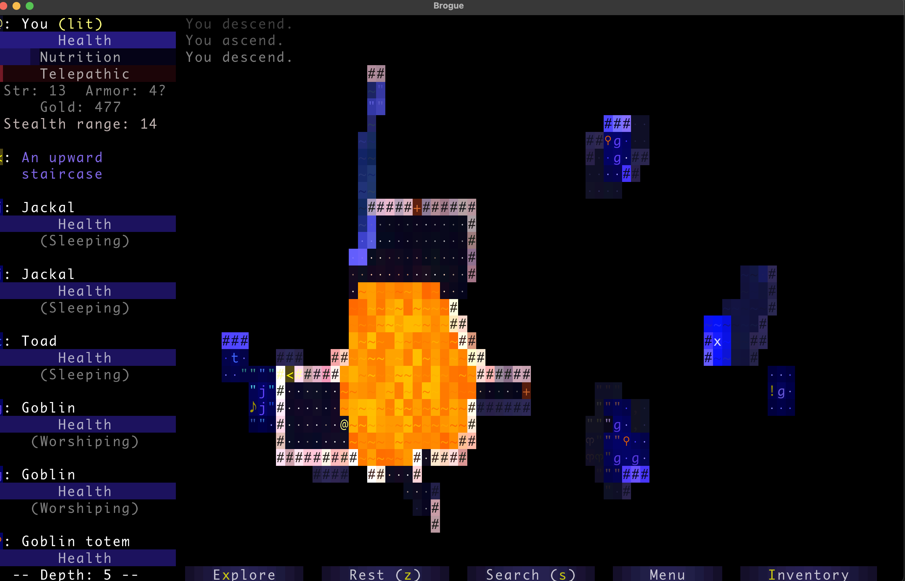
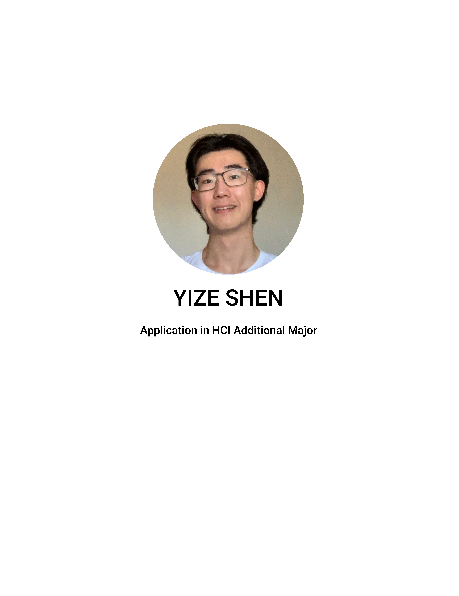

March felt longer as we got a full week off for spring break, however, the second wave of midterms are approaching…
Life Updates
豆角焖面, Work Life Balance

Instead of view errands as task to complete, tried to see these as a time to relax.
Followed reciept from 少数派, attempted 豆角焖面. Cooking meals, compare to ‘rewarding experience with direct beneftis’ back in December 2021, think ‘an experience that allows me to enjoy the current moment’ now became a more accurate definition.
Totallly not because the dish turned out much saltier than expected.
Heard about ‘cabbage cutting meditation’ eariler this month, where one would try to meditating during repeating, simple tasks.
比如这个「卷心菜切丝冥想」。没空做菜的时候，超市里也能买到很多方便的切好丝的净菜，虽然节省了很多时间，但也不免可惜，因为「给卷心菜切丝可是绝佳的冥想时间呢」。关键点：不要觉得麻烦而想着赶紧切完了事，卷心菜切一切最多几分钟不是吗。
Via 瞬间记忆 - 卷心菜切丝冥想.
Less about meditation, felt the act of cooking, although less productive, was a nice break from the busy schoo llife. Flipping porks from side to side, sprinkle salt here and there, for a moment I get to forget about assignment dues, projects coming up.
Relating back to the chat with the ex TA on work life balance, January 2022, thought our university taught us how to work, however, still much for us to discover on how to live a healthy, happy life.
As a side note, raw garlic with noodle really is something else, would highly recommend :’).
Brouge, Trainers, Enjoying the Jounrey
The beauty of rougelike gamesWas a bit torn between destination and jounrey, which I should prioritize.
One TA recommended Brouge, a 2MB rougelike game, where players try to pass 26 randomly generated floors, gathering loot and fighting monsters.
Spend 2 hours playing it during spring break, got hard stuck at around level 8, and decided to beat the game with trainer.
Embarassing to admit, ever since I got to learn C and how to manipulate bit values, the enjoyment I obtained from games seems to have faded away. It almost felt like I was more powerful when little, spending days battling a side quest boss, and that sense of fulfillment when I finally defeat the obstacles.
幸福不该是悬在终点处的奖赏，它只是道路中偶然乍现的光亮。
Via 自说自话 - 了解自己的能力圈, they mentioned about this notion of, the struggles in life is the life itself.
Time and joy seems to be on two sides of a balance, I only get to choose one at a time. Now that I have focused on the goal, on beating the game, felt I put less emphasis on the jounrey?
Thought about into the breach, last game I remember playing before coming to college, wish to allocate a day in the summer playing the game, try out a different side of the balance.
HCI Application, TA Feedback, The Best Way To Be a Genius
Ironically at the time that I am writing this, I still don't know if I got in or notAs what my grandparents say, ‘台上一分钟，台下十年功’, found it more and more resonating.
Applied to an additional major last week. While organizing the application portfolio, had this feeling of, ‘wow I have done quite a few things in previous years’.
Similar thoughts when gotten TA feedbacks two days ago, comments such as ‘explains problem throughly’ and ‘makes it easy to ask questions’.
This sense of pride and content, instead of contributing it to talent, realized these were true because I have done these longer. For portfolio, I had an extra year of school, thus more projects to showcase. For TA, have 2 semesters of experience already, practicing how I can better explain (the same) problem sets.
那有没有让自己变成天才的方法？James Clear 提供了一个：
第一步，围绕一个主题阅读和思考几年；第二步，记录这个过程的所有想法 ── 大部分都会很普通；第三步，回顾你的想法，删掉所有普通的；第四步，打磨和分享其中最好的；第五步，最终看起来像个天才。
Via 生活奇旅 - 幻觉, this illusion of being a genius. Moving away from myself, people I see on social medias, it’s simple to category them as gifted, but thinking now, I am more curious on how they got there.
Deleting Social Medias
It has being just about 90 days since I uninstalled Instagram, Facebook and WeChat moments, felt peace of mind.
The past year social media brought to me more harm than good. Fear of missing out, would constantly refresh my feeed, getting distracted on current task.
Realized later that, I geniutely care little on other’s life, and for those who I care, it was quite easy to get updated through other means, chatting in person, reachout through emails/messages etc.
Similar point of view appeared in 自说自话 - 你要走自己的路，也要允许他人走在自己的路上, this notion of ‘my life is already full enough, no need to enrich it with other’s moment and snapshots’, feels nice that I get to align my thoughts and action.